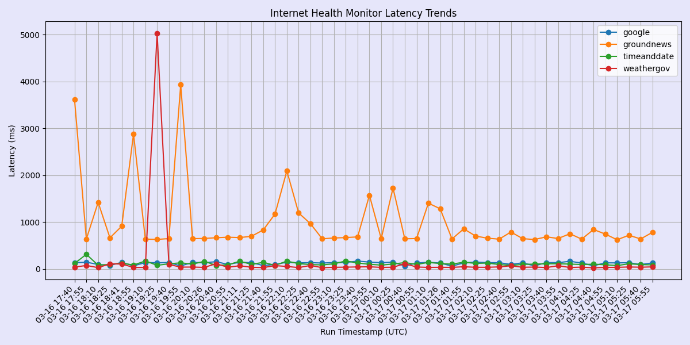

Internet Health Monitor
Project RepoScheduled monitoring platform that performs HTTP health checks, measures latency, and publishes historical observability artifacts and trend charts.

Interactive History
Select how many timestamps to display in the interactive history view.
points
Loading internet health history...